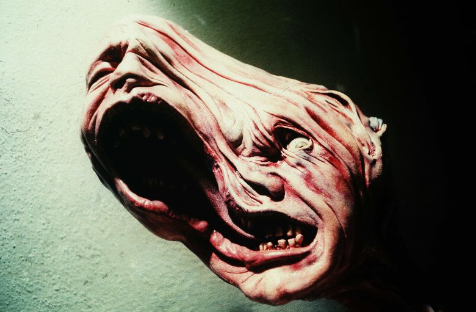
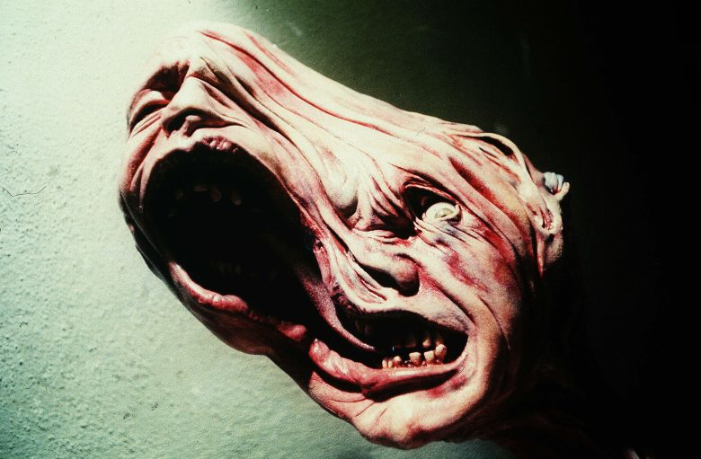
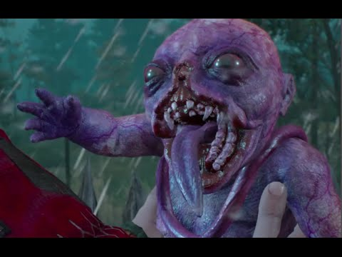
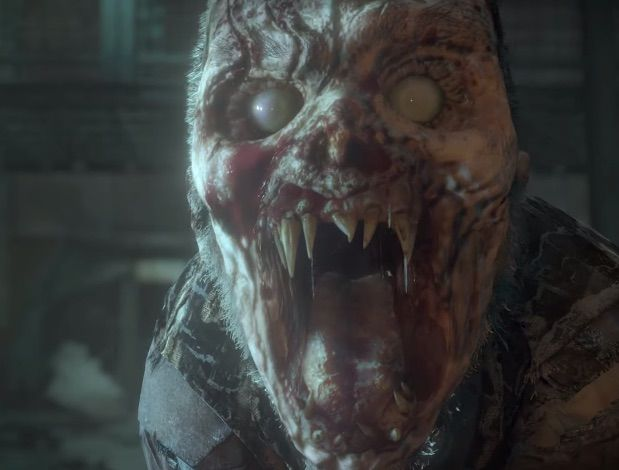
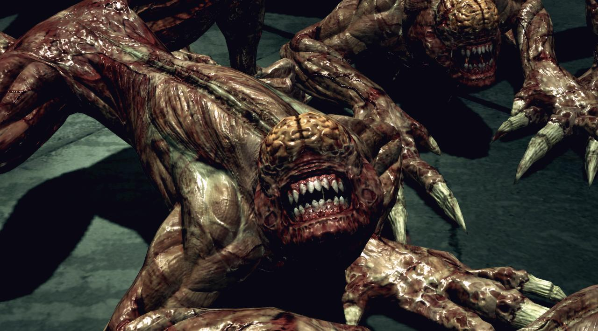
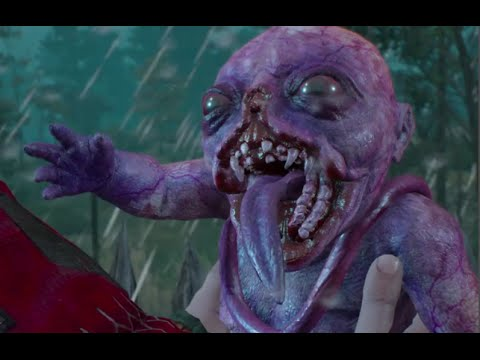
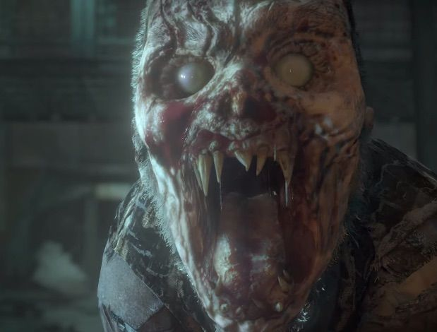
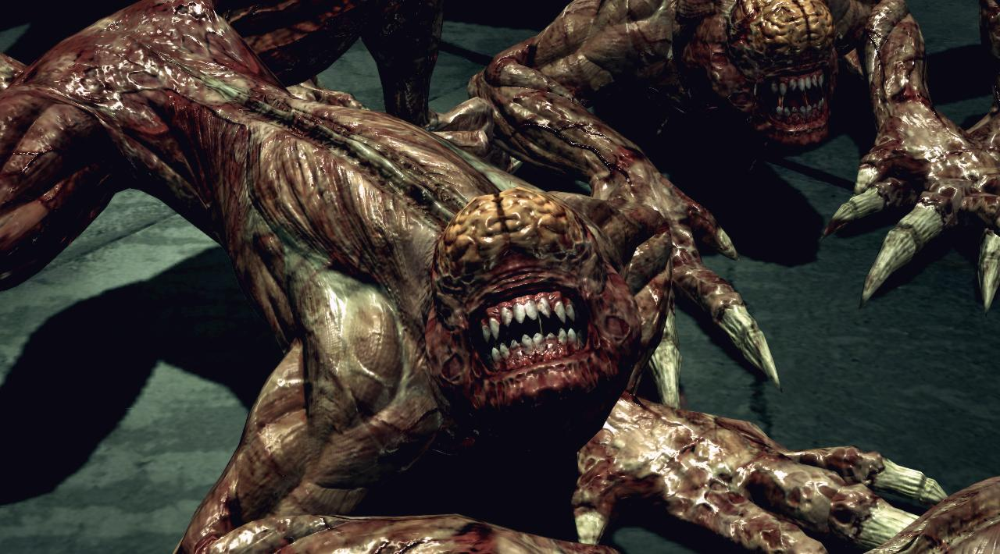

"The Thing" was my first horror movie after 10 years and I have to say that I wasnt expecting myself to enjoy the movie as much as I did. The Thing(1982) by John Carpenter is a movie about a bunch of scientists on Antarctica who are trying to survive (and kill) the Thing which is some kind of alien creature from outer space that takes over a living creatures body and perfectly imitates it and is forever looking for something new to kill.
In The Thing, whenever a living creature was shown to be infested, it looked horrifying and just plain disgusting but I just couldn't look away. No matter how much I wanted or tried to look away, the movie would just suck me back in. The movie wanted me to expect more and so I did. There was never a moment in the movie where I felt that the scene was being milked for everything it possibly held unlike this line right now where i continue to go on and on about the same thing and you continue to read it because I dont know how to end this sentence...
 

The fascinating thing about "The Thing" was that the you knew exactly the same amount as the character (most of the time) so it was able to allow the viewer to visualize themselves in the same scenario and think about how they would've dealt with the same situation. The viewer would have his own suspiscions about the character and try to figure out who could be the infected. The movie really plays with the characters 'paranoia' quite well. All the characters knew that any one of the characters could be infected but they were all friends so we are able to relate to the characters of Dr Blair and Windows. Dr Blair who ends up losing his sanity and goes completely crazy and starts to attack everyone there and Windows who is absolutely shitting his pants and rightfully so. He is also the one that all the characters seemed to be eternally annoyed at because he dropped the keys which the thing took and got rid off all the blood. I mean he kinda derserved it but its kinda sad how they all just think hes the infected one with just that information.
The Thing was clearly inspired by the Lovecraftian mythos but after the massive success that it had, it went on to inspire some of the best games of our era. From AAA videogame titles like Bloodborne, The Last of Us and Resident Evil to less popular yet amazing games like Outlast, Little Nightmares and Until Dawn and now even a game called Among Us(the entire concept is exactly the same. It kinda feels like they ripped off the idea).
 





The Thing is an absolute must watch and is a movie I'll probably end up re-watching countless of times...